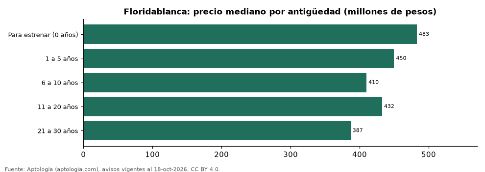

Apartamentos en venta en Floridablanca según antigüedad: precio y m² de cada grupo (octubre 2026)
Estudio con datos abiertos (CC BY 4.0). Versión original: https://github.com/elbroker/aptologia-datos/tree/main/estudios/apartamentos-en-venta-por-antiguedad-floridablanca-2026 · DOI: 10.5281/zenodo.23514218
En Floridablanca, un apartamento en venta del grupo «Para estrenar (0 años)» se pide en 483 millones de pesos en la mediana y uno del grupo «21 a 30 años» en 387 millones de pesos (-19,9 %). Por metro cuadrado, el más barato es «21 a 30 años» (4,08 millones de pesos/m²) y el más caro «Para estrenar (0 años)» (5,25 millones de pesos/m²).
Resumen: analizamos 903 apartamentos en venta en Floridablanca con antigüedad declarado.
Actualizado: 18 de octubre de 2026 (datos del 18 de octubre de 2026) · Próxima actualización: mensual.

Resumen
| Indicador | Valor |
|---|---|
| Para estrenar (0 años) | 483 millones de pesos |
| 1 a 5 años | 450 millones de pesos |
| 6 a 10 años | 410 millones de pesos |
| 11 a 20 años | 432 millones de pesos |
| 21 a 30 años | 387 millones de pesos |
| Avisos | 903 |
Precio y m² por antigüedad
| Antigüedad | Precio (mediana) | Rango típico (P25–P75) | Por m² (mediana) | Área mediana (m²) | Avisos |
|---|---|---|---|---|---|
| Para estrenar (0 años) | 483 millones de pesos | 368 millones de pesos – 532 millones de pesos | 5,25 millones de pesos | 88 | 36 |
| 1 a 5 años | 450 millones de pesos | 361 millones de pesos – 560 millones de pesos | 5,23 millones de pesos | 87 | 666 |
| 6 a 10 años | 410 millones de pesos | 360 millones de pesos – 480 millones de pesos | 5,05 millones de pesos | 81 | 72 |
| 11 a 20 años | 432 millones de pesos | 379 millones de pesos – 500 millones de pesos | 5,00 millones de pesos | 86 | 86 |
| 21 a 30 años | 387 millones de pesos | 290 millones de pesos – 475 millones de pesos | 4,08 millones de pesos | 94 | 43 |
Medianas del precio pedido; grupos con menos de 30 avisos se omiten.
Preguntas frecuentes
¿Cuánto cuesta comprar un apartamento de qué antigüedad en Floridablanca? Para estrenar (0 años): 483 millones de pesos; 1 a 5 años: 450 millones de pesos; 6 a 10 años: 410 millones de pesos; 11 a 20 años: 432 millones de pesos; 21 a 30 años: 387 millones de pesos (medianas de octubre de 2026).
¿Qué grupo sale más barato por m²? Por metro cuadrado, el más barato es «21 a 30 años» (4,08 millones de pesos/m²) y el más caro «Para estrenar (0 años)» (5,25 millones de pesos/m²).
Metodología
- Fuente: exportes nocturnos de la base de datos de Aptología (aptologia.com) del 18 de octubre de 2026: avisos vigentes de vivienda en portales inmobiliarios de 13 países, recogidos por Aptología y vistos en línea entre el 11 y el 18 de octubre de 2026. Corte: 18 de octubre de 2026.
- Depuración: se eliminan duplicados exactos (misma ciudad, zona, tipo, precio, moneda, área, habitaciones y baños) y los precios fuera del percentil 1–99 de cada país, operación, moneda y tipo; el precio por m² usa solo avisos con área declarada entre 12 y 2.000 m² y también se recorta al P1–P99.
- Qué se mide: precios pedidos (publicados), no precios de cierre. En arriendo, el canon mensual sin administración, gastos comunes ni condominio.
- Muestra mínima: cada cifra publicada se apoya en al menos 30 avisos; las celdas con menos se omiten.
- Colombia: Precios en pesos colombianos, sin conversión de moneda.
- Limitaciones: la cobertura depende de los portales que recorre Aptología en cada país y es mayor en las ciudades grandes y en los segmentos medio-alto y alto; el área es la que declara el aviso, sin verificar; los nombres de zona vienen de los portales.
- Privacidad: solo se publican agregados; no se publica ningún dato personal, enlace a avisos ni nombre de anunciante.
- Datos abiertos: datos.csv, licencia CC BY 4.0.
Cómo citar
Pinzón Pineda, D. M. (2026). Apartamentos en venta en Floridablanca según antigüedad: precio y m² de cada grupo (octubre 2026). Aptología (aptologia.com). https://github.com/elbroker/aptologia-datos/tree/main/estudios/apartamentos-en-venta-por-antiguedad-floridablanca-2026. Datos: datos.csv, licencia CC BY 4.0.